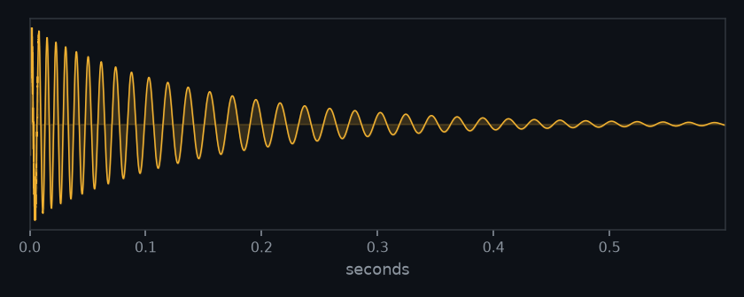
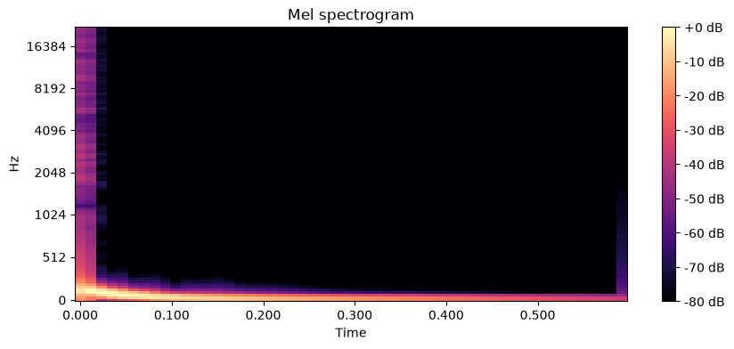

See a subcomponent, not the file


For LLMs
smpl view emits a multimodal report for whatever you isolated: feature tables
with units, marker tracks tied to musical time, and actual spectrogram
images a model can open and describe. The deterministic tier measures; the model
interprets. If it doesn't need reasoning, it shouldn't call a model.
$ smpl read x.wav | smpl qc | smpl spectrogram | smpl view # a lossy origin shows as a brickwall low-pass in the spectrogram
For humans
Every seam is a boring Unix citizen. NDJSON on the wire, so jq works. Real file
paths for heavy bytes, so sox and ffmpeg work. Content-addressed and
memoized, so re-running a pipe is nearly free.
$ smpl read master.wav | smpl loudness \ | jq 'select(.kind=="feature").data'
The frame
One frame per line of UTF-8 NDJSON. Self-describing; payload by hash (in the CAS)
or inline data.
{"v":1, "kind":"audio", "id":"blake3:9af2…", "role":"stem:drums",
"of":"blake3:1c0a…", "op":"demucs", "hash":"blake3:c3d4…",
"media":"audio/wav", "meta":{"sr":48000, "dur":8.0, "ch":2}}
Kinds: audio · image · text · vector · marker · feature · midi · error. The full
normative contract — canonical-PCM hashing, the memo key, CAS integrity, units & timebase —
is in spec.md, versioned like an API.
The raw-WAV bridge
Drop to raw WAV to reach any Unix DSP tool mid-pipe, without losing lineage or cache:
$ smpl read x.wav | smpl as-wav | sox - -t wav - reverb 50 \ | smpl from-wav --role x.wet --derives-from source | smpl describe
Install
# light core — one isolated install $ uv tool install git+https://github.com/chronick/smpl#subdirectory=packages/smpl \ --with git+https://github.com/chronick/smpl#subdirectory=packages/smplstream \ --with git+https://github.com/chronick/smpl#subdirectory=packages/smpl-analysis # heavy generators install into their OWN venvs (two-tier — torch never touches the core) $ uv tool install git+https://github.com/chronick/smpl#subdirectory=tools/smpl-gen
The tools
read / writeingest → frames; materialize a frame → fileresolve / gchash/id/role → CAS path; collect unreferenced blobsas-wav / from-wavthe lineage-preserving sox/ffmpeg bridgecat / describedescribe-as-filter: features + caption + imageloudnessintegrated LUFS, true-peak dBTP, short-term LUFSspectralflatness / crest / spread / rolloff / contrast / slopeqcclipping, phase/mono, DC, SNR, clicks, lossy-originspectrogramannotated mel / CQT / HPSS + waveform (PNG)convertformat / sample-rate / bit-depth (new frame, own hash)filter eq env fx slice selectedit filters + stream selectionviewthe multimodal LLM / human reportgen cloud transcribe stems embed synthPATH-discovered heavy tools (own venvs)